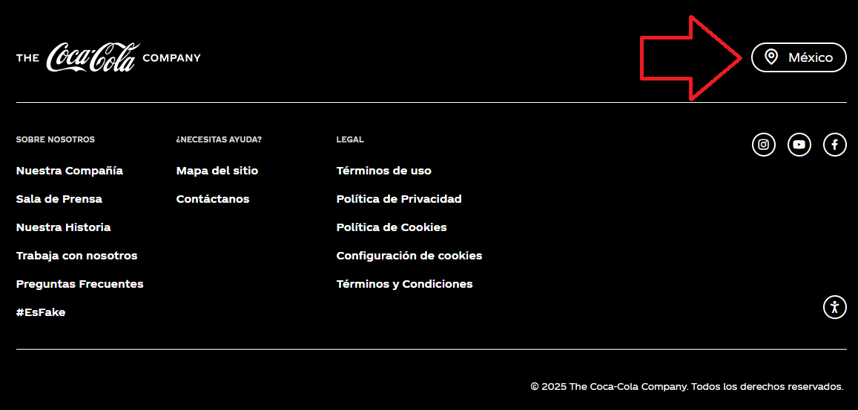
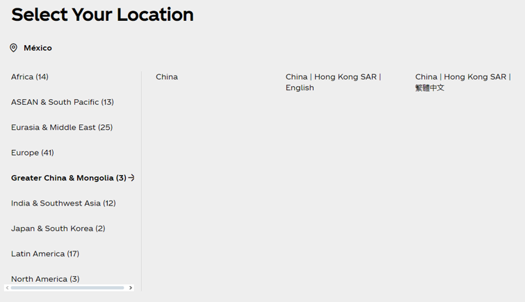

Identifying Translatable Elements in Websites
Discover and analyze the various types of content that require translation and localization in global websites, exploring both technical aspects and cultural implications.
Exercise Overview
In this activity, you'll identify several types of translatable elements on Coca-Cola's website that you would work with as a web translator. You'll examine how global brands make choices about standardization versus adaptation, analyzing both the visible content and the hidden technical decisions that shape user experiences across different markets.
By researching real-world examples, you'll develop critical awareness of how political considerations, technical constraints, and cultural sensitivity intersect in professional localization work.
Learning Objectives
- Identify translatable elements in websites, including menus, headers, footers, graphics, videos, and buttons
- Analyze the technical aspects of localizing and translating different components within web content
- Evaluate the cultural and political considerations that influence localization decisions
Instructions
Watch the Introduction Video
Watch the video 'Website Localization' by Anthony Pym. Pay attention to the examples of standardization and adaptation that Pym discusses in the video.
Explore the Website
Visit Coca-Cola's website in a language besides English. For example, you could explore the site for the Mexican market.
Learning Tip: You can also visit websites for other global locations to make comparisons and deepen your understanding of customizations that happen during localization.
Identify a Translatable Element
Identify a translatable element on the website and its location (menus, headers/footers, graphics, videos, buttons, etc.).
Research Technical and Cultural Aspects
Research the technical aspects of localizing and translating that type of content, as well as the cultural aspects that should be considered in localization.
Document Your Analysis
Write a post about the element you identified. Include screenshots of pertinent content in situ. In your post, analyze the technical and cultural aspects of the translation and localization work. Include the sources you consulted in your research.
In case it helps, you can review the example analysis on Coca-Cola's location/language selector below.
Example: Language Selector
A language selector might seem simple, but this example reveals the complex technical, linguistic, and political decisions involved in effective localization.
Selector Location in Footer & Regional Localization Complexities
In Coca-Cola's website footer, there's a language selector through which users can choose a region to view content in that region's lingua franca.
 Interestingly, when clicking on the selector, the content appears in English rather than Spanish. The location selector therefore needs translation in order to complete the localization to Mexican Spanish.
Not only that, the location selector also reflects bias toward mainland China. In the screenshot, I've selected "Greater China & Mongolia," but Taiwan doesn't appear as a location within this region. This may be because mainland China doesn't recognize Taiwan's statehood, although Taiwan considers itself an independent country.
In terms of the localized website language, this makes a significant difference. If users from Taiwan access China's localization, the content will be presented in Simplified Chinese, while Taiwanese read and write in Traditional Chinese.
Above, we covered how Coca-Cola's location selecter implies support for Mainland China's political stance toward Taiwan. This could reflect the political stance of the company. Unfortunately, it's equally likely that no one thought at all about the implications of the design of the language selector. This would not be the first time that Coca-Cola failed to recognize the political implications of their content.
A prominent example of the importance of cultural sensitivity in localization is Coca-Cola Mexico's 2015 controversy with its 'Open Your Heart' campaign, where an ad intended to show inclusion provoked strong backlash from the Mixe community in Oaxaca due to its colonialist and stereotypical perspective. The campaign had to be withdrawn and the company was forced to publicly apologize, demonstrating how even the largest brands can suffer significant reputational damage when they don't adequately consider local cultural context in their marketing and communication strategies.